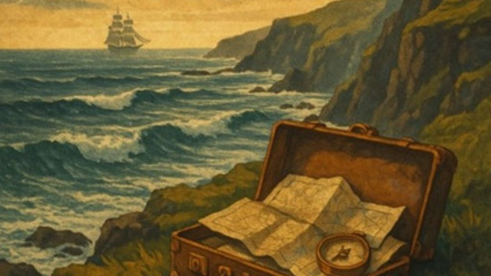

Sons of Racketeers Mine History and Revolution in 'Beat The Press Gang'

The following feature is now included in our online magazine which is also available in print.
Issue #3
Online Magazine | Print MagazineFor more details contact us at: volechomag@gmail.com
Certain songs are torn from the moment, and others tug at the string of the past to show us how little things have actually changed. Sons of Racketeers' latest track "Beat The Press Gang" does both. Rooted in the violent past of press gangs at sea—whereby men were bullied or kidnapped into the service of English warships—the song also becomes a protest anthem in the present, one that hauntingly resonates with a world where children are still conscripted into wars they never chose.
To the ear, on initial listening, "Beat The Press Gang" is music to a folk story. The opening tangles into acoustic texture, a campfire storyteller drawing you in before the storm hits. And then the song breaks out into something more, bigger, and a whole lot more angry. Electric guitars slice in, drums push the rhythm ahead, and vocals soar into a virtuosic call to action. It's a change that reflects the tension of its subject—the subdued inception of a story that bursts forth into rebellion.
There is something epic in the building of this song. It's not much of a stretch to see it as the score to a historical epic like Master and Commander, but with an added injection of modern tension that would fit nicely into the hard-luck grind of Peaky Blinders. The folk roots keep it grounded in a tradition of tales of working lives, but the rock power charges it into the modern day, making the struggle concrete.
Lyrical-wise, Sons of Racketeers eschew sermonizing. They tap instead into the emotional content of the story. You feel the terror of men being turned out of their houses, the rage of losing power, and the fleeting burst of outrage in not taking it lying down. That's the human element that resonates with you. It's not sailors in the historical past—it's anybody today and now who are being drafted, displaced, or threatened with wars they never enlisted in.
The din reminds one of groups such as The Decemberists, who for a long time have blended folk heritage and rock narrative, but Sons of Racketeers venture further into electric fire. One hears a bit of The Pogues in the folk-punk edge of the song, and even Led Zeppelin when the band heads into its harder riffs. It's a hybrid that is raw-sounding and planned at the same time, as if the song was composed to be played live in a dense place where the audience can stomp and bellow along.
In a way, "Beat The Press Gang" is more than an album—it's a testament to what is possible in folk rock. It's protest music without slogans, history class without textbooks, and rock without the glaze. It doesn't try to be background music, but instead makes you feel the weight of its tale.
For those who adored the blaze of The National's "Bloodbuzz Ohio," the sweeping historical sagas of The Decemberists, or the tempestuous anger of Wolfmother, this song will be a refreshing addition to the playlist. And for those who have ever challenged authority, seethed at injustice, or simply craved a song that speaks to some primal urge, "Beat The Press Gang" comes with energy.
Sons of Racketeers have taken a black page from the past and made it a song that's as vibrant and contemporary as anything. It's a message that the past bites back, and that with just the right blend of folk and rock, it still does.
Follow Our Playlist For More Music!
This dispatch was last updated on September 26, 2025